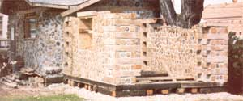
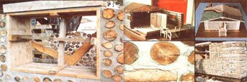
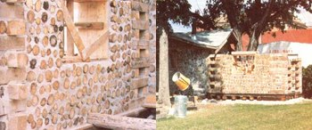

The ''stackwall'' or "cordwood" or "stovewood" method of construction has been around a long, long time. But It wasn't until this magazine began to publicize the Idea (see "We Built a $75,000 House for Only $10,000" In MOTHER NO. 45, "The Return of the Cordwood House" In MOTHER NO. 47, and "We Built a Hobbit Garage" In MOTHER NO. 49) that the concept really began to catch on.
Well, you'll be reading a lot more about stackwall construction In future Issues of THE Mother Earth News. And Jack Henstridge (who designed and built the $75,000 home for $10,000 that first caught MOTHER's attention) has already said he'll conduct one of the very first work/ learn programs when MOTHER starts up her seminar-workshop-work/study projects.
In the meantime, we thought you'd like to know that the Civil Engineering Department of the University of Manitoba has been offering courses on the subject for two years and plans at least two more one-week-long work/learn stackwood construction programs during the coming months.
Rob Patterson, the Instructor for the programs, now plans to conduct one of the courses In May and a second In July. Each class will be limited to about 20 people but Rob states that he'll expand this summer's activity to Include an additional third class in June and a fourth In July If the interest is high enough. Rob has also told MOTHER that, while he usually holds his classes right on the University of Manitoba's campus, he'll be pleased to conduct the one-week course at other locations ... If he has enough advance notice to arrange all the details. Fees will be negotiated in such a case.
All tools, materials, and textbooks are furnished when you sign up for one of Rob's classes. About 25% of each course is allotted to lectures on building theory, the use and maintenance of tools, and the calculation of a project's material and manpower requirements. Most of the rest of the time Is spent In all facets of actual "hands on" acquisition of materials, construction, and both the Interior and exterior or "finishing off" of a cordwood structure.
The total cost for all this (when the classes are held on the University of Manitoba campus) is a modest $175 per person I or the week ... excluding accommodations (which are available at additional expense on the campus). The photographs on the facing page-of both model and full-sized stovewall buildings used In Rob's courses-Indicate that the fee is money well spent. For more details or to sign up for any of the coming classes, contact Mr. Rob Patterson Stackwall, Civil Engineering Department, University of Manitoba, Winnipeg, Manitoba, Canada R3T 2N2.
|
 |
 |
 |